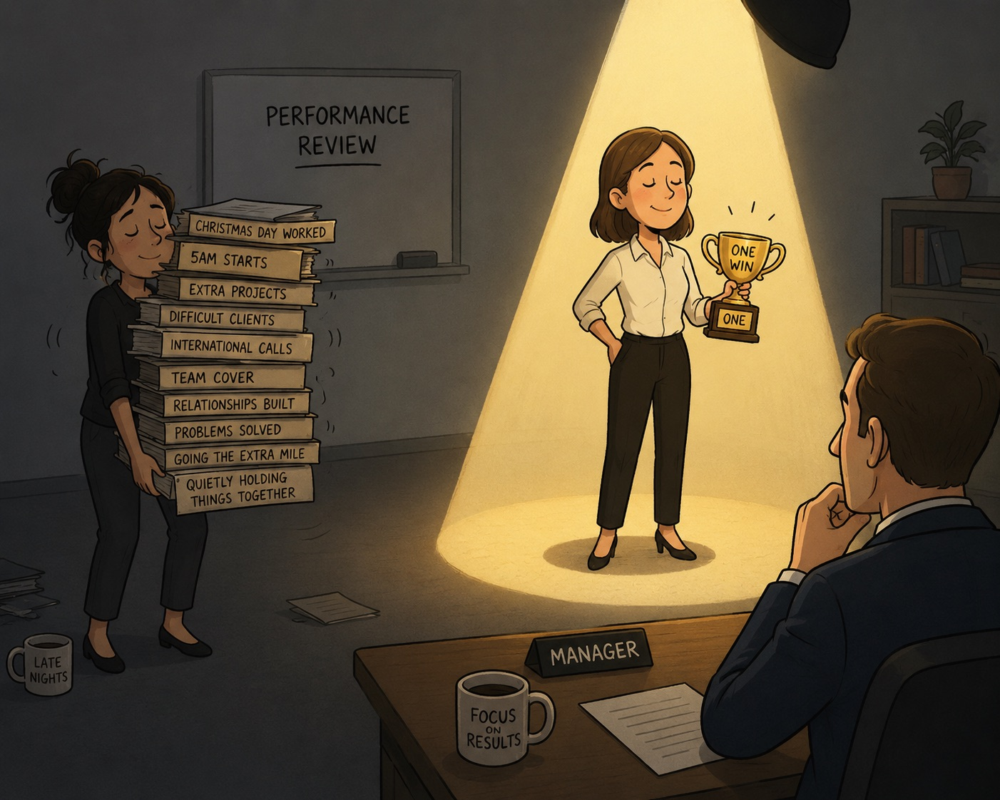

Why Working Hard Isn't the Same as Being Seen

A client came to our session last week completely undone.
Someone above her had picked apart one small thing she'd got wrong. One thing.
Meanwhile, over the past year, she'd worked Christmas Day, got up at 5am to speak to clients in other time zones, and built relationships with people outside the business that most colleagues couldn't touch.
None of that was in the room with her when the criticism landed.
Just the one thing.
I've had this conversation more times than I can count, always with the same kind of person: conscientious, capable, quietly exceptional. And almost always with the same blind spot.
They believe that if they just keep working hard enough, someone will eventually notice.
I wanted to write about that because I think it's one of the biggest misunderstandings we carry into work.
Why the hardest workers are often the least seen
If you grew up learning that being good, being helpful, or being no trouble was how you stayed safe or earned love, that pattern doesn't clock out when you start a job. It simply changes uniform.
For many people, hard work isn't just about achievement. It's about safety.
Somewhere along the way, your nervous system learned that being useful reduced the chances of criticism, conflict or rejection. So you become the person who never lets anyone down. The person who says yes. The person who quietly carries more than everyone else.
From the outside, it looks like dedication.
Inside, it often feels like survival.
The trouble is that workplaces don't reward effort they can't see. A nervous system that's used to proving its worth quietly will often keep doing exactly that, indefinitely, unless something interrupts the pattern.
Many conscientious people spend years becoming indispensable without ever becoming visible.
Why one small criticism hurts so much
One of the things that surprised my client most was how one piece of criticism completely eclipsed everything she'd achieved.
But that's exactly what often happens.
When you've spent years measuring your worth through what you do for other people, criticism rarely stays about the task. Your nervous system hears something much bigger.
Maybe I'm not good enough after all.
That's why one difficult conversation can wipe out months, sometimes years, of extraordinary work.
Your brain isn't weighing the evidence fairly in that moment. It's protecting an old belief.
Understanding that doesn't make criticism pleasant, but it can stop you mistaking an emotional reaction for objective truth.
Before your next appraisal: build your case like a lawyer, not a hopeful bystander
One of the hardest shifts is realising that your manager probably isn't keeping a mental record of everything you've contributed.
They're busy too.
They forget.
They miss things.
That doesn't necessarily mean they don't value you. It simply means they're human.
Which means part of your role is helping them see the contribution you've already made.
Don't walk into an appraisal hoping to be noticed.
Walk in with evidence.
Re-read your contract and job description. Where have you gone beyond what's actually written?
Write down every example of overperformance you can think of. Not just the obvious successes, but the quieter ones too. The early mornings. The difficult conversations. The client relationships you've built. The problems you've solved before they became somebody else's.
Then practise saying those things out loud before you're sitting opposite your manager. It might feel awkward at first. It might even feel like bragging.
It isn't.
It's translation.
You're turning quiet, invisible effort into something another person can actually recognise.
The trap of the friendly boss
It's completely natural to want a good relationship with your manager.
Feeling safe with the people we work with matters.
But it's worth remembering that it's still a professional relationship.
If your manager knows about your breakup, your difficult month, the family situation you're trying to navigate or the client who's been exhausting you, those things inevitably become part of the picture they hold of you. That's not because they're bad managers. It's simply because they're human.
It doesn't mean you should pretend to be someone you're not or never ask for support.
It just means being thoughtful about what belongs in a professional relationship and what belongs with close friends and family.
Warmth at work is valuable.
Professional boundaries are too.
Keep your own bases covered
Quietly, and without panic, keep investing in yourself.
Know what people doing your role are earning elsewhere.
Keep your LinkedIn profile up to date, even if you're perfectly happy where you are.
Keep developing your skills, so your value continues to grow, both inside your current organisation and beyond it.
None of this is about threatening to leave.
It's about never negotiating from a position of fear.
When you know you'll be okay wherever you work, conversations about pay, promotion and opportunities become much easier.
That's not disloyalty.
It's self-respect.
You don't need to work harder. You need to become more visible.
If you've spent years believing your value comes from quietly carrying everything, talking about your achievements can feel deeply uncomfortable.
That makes perfect sense.
But there's a difference between needing recognition in order to feel worthy and communicating your contribution clearly.
One is asking other people to decide your value.
The other is simply allowing people to see what was already true.
The evidence of your value already exists.
It's in every relationship you've built.
Every difficult conversation you've handled.
Every problem you've solved.
Every extra mile you've quietly walked.
Your job now isn't to work even harder.
It's simply to stop hiding the evidence.